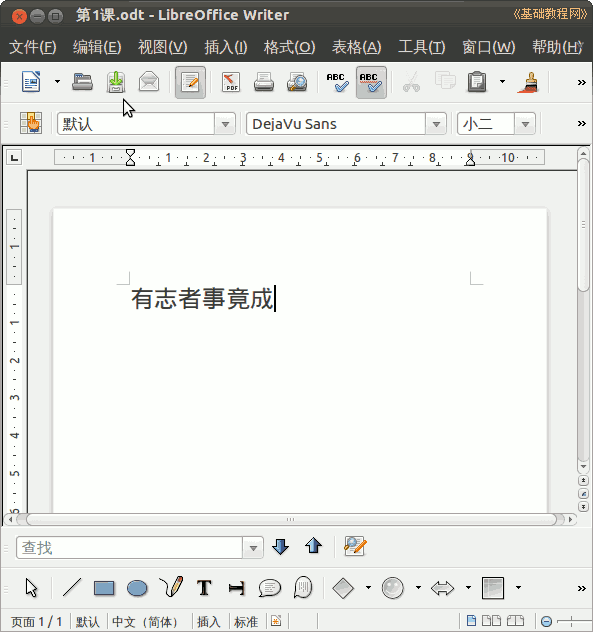

2012-2013 第二学期七年级文字处理和网页教学设计
作者：TeliuTe 来源：基础教程网
一、新建文件夹和保存 返回目录 下一课
（一）教学设计
1、学习目标：学会新建文件夹和保存
2、注意事项：文件夹名称和保存文件名别弄混了
3、教学过程：
1）教师准备学案和板书；
2）学生整队进入，开机抄黑板上笔记；
3）教师讲解板书演示操作；
4）学生打指法、日志、完成操作；
5）教师打勾记录学生指法成绩，检查日志和操作；
注：学生抄完笔记就开始打指法、日志，老师讲完后再继续完成；
（二）板书设计(学生笔记)
第1课 学会新建文件夹和保存
1.在主文教学新建7-2回车.
2.打开绿色图标，写一句名言。
3.点保存为第1课。
4.存到7-2里。
操作指南 1
1、校园网：192.168.12.250
2、主文件夹是第一个黄图标
3、保存是一个绿箭头
4、文件夹、write、指法E01、日志放好
（字体、字号、颜色、自己可见）
操作图示：

（三）课后记 2013-2-22 11:37
--
下午上两节课就休息，这样另外两个班又岔开
明天八年级的也没上，这课上的有些别扭
--
农历假期和公历星期经常有冲突
要不把假期并到公历上也好
--
考虑量的问题，加上书签会不会太多
还是放到下节课，在保存对话框里添加
--
指法增加，操作指南增加，
要求把前面的字体和标签都用上
--
没有讲工作区的那个还是比较麻烦
不是很实用，除非经常重复做某一任务
--
密码忘记的先进游客身份
期中考试以后开互联网
--
2班忘记检查有没有游客登陆的，下节课再说
把建文件夹跟文件名搞混淆的
--
强调东西都摆好，过来就检查
两个火狐，两个文件夹
--
双击是打开，右键选第一个
重复许多遍，这个上学期就应该强化的
--
把电脑制作的布置一下，虽然不一定能做出来
每个班挑几个也行，通知下去然后就没动静了
--
上学期的日志，字体字号颜色，信纸都要上
这样可以复习巩固，也可以增加操作练习
--
指法还都40-70或者更低些，增加到200个字符
先把指法和日志记一下，然后记文件夹和write
--
建文件夹有的没建，有的名字写第一课
有的建两个7-2，有的把文件名写成7-2了
--
指法不要求速度，让按照盲打来练
有些学生没来位置空着了，这个排座位的时候没法弄
==============
第1.1课 学会添加书签
1、打开主文件夹－7-1
2、点最上边菜单“书签－添加书签”
3、write 输入操作指南1
4、保存为“第1.1课”
操作指南见上一课
--
课后记 2013-02-26 20:09
检查日志和指法，在火狐里
在7-1里检查书签和保存的文件，检查write里录入的
--
上午两个班学第一课，上次没上成的
下午两个班学1.1，复习一下保持相同进度
--
学生有些大声说话的，得注意一下
如果惯成毛病，以后再改就困难了
--
学生讲解的时候会了，自己做的时候又忘记了
笔记还是不能自觉使用，光是抄一遍就完了
--
指法和日志主要是练盲打的，虽然还是快快打完
打字的姿势不对，慢慢改一下好了，经常提醒一下
--
路由器是怎么回事，设置了不起作用
上回明明试着是可以的，怎么今天又不起作用了
--
看提示是许可没有找到证书，明天请人来看一下
要不再一台台改网络就麻烦了，不知是怎么回事
--
操作指南输入到write 中，以后慢慢把操作指南用上
学生还是习惯把课堂笔记输到日志里，不用改了
--
笔记本得盯紧点，每次要检查一下
稍稍放松就会偷懒的，这个也是毛病
--
还是要有点机制，不抄笔记的大多操作也不好
指导的时候要问下笔记的情况，这样也可以促进抄笔记和用
--
各个班都有新来的，也有转走的
新同学得给一个号，原来的密码找出来
--
新建一个校园网的帐号，再讲一下指法和日志
大概知道学习的步骤，回去让把键盘背一下
返回目录 下一课
本教程由86团学校TeliuTe制作|著作权所有
基础教程网：http://teliute.org/
美丽的校园……
转载和引用本站内容，请保留作者和本站链接。